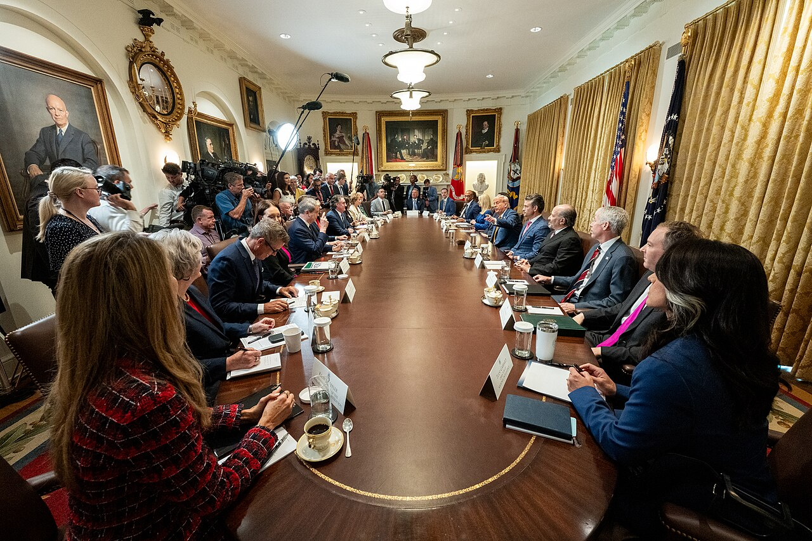

卷·15 · 幕僚走马灯 · 第一手档案馆高管的任期表
他管理政府，像管理一家人员流动极快的公司：第一任期四年，四个幕僚长、两任国务卿、四位国防部长、四位国安顾问。本馆只上台账，不猜人心。
任期起讫以公开记录的标准表述为准（就任日/离任日均为当职首尾日）；"代理"与"参议院确认"分列标注。更替率采用布鲁金斯学会（Brookings）自 1980 年起维护的高层幕僚追踪口径：该机构对第一任期"A 队"（核心幕僚）的统计为 92%——1980 年有记录以来的最高值；其 2026 年 1 月的续评认为第二任期人事更稳，但相较历届总统仍然偏高。名单核验基准日 2026-10-04。
- 第 1 任赖因斯·普里巴斯（2017-01-20 至 2017-07-31）共和党主席转任，管不住西翼的人事暗斗，六个月被请走。
- 第 2 任约翰·凯利（2017-07-31 至 2019-01-02）四星上将救火队，立规矩十八个月后与老板互相失望收场；离任后多次公开批评前老板。
- 代理米克·马尔瓦尼（2019-01-02 至 2020-03-31）以"代理"头衔干了十五个月，头衔没转正，人先转去了别处。
- 第 4 任马克·梅多斯（2020-03-31 至 2021-01-20）前国会众议员，干满任期最后十个月直到卸任。
- 第 1 任雷克斯·蒂勒森（2017-02-01 至 2018-03-31）埃克森美孚前 CEO，与总统在伊朗协议等议题上公开决裂；2018-03-13 被一条感谢其服务的推文解职，而他人还在非洲访问。
- 第 2 任迈克·蓬佩奥（2018-04-26 至 2021-01-20）从中情局长转岗，干满任期剩余部分，任内促成亚伯拉罕协议；离任后与总统在 2024 竞选里分道扬镳。
- 第 1 任詹姆斯·马蒂斯（2017-01-20 至 2019-01-01）"疯狗"将军，因叙利亚撤军决定辞职；辞呈公开信里说（大意）：你有权找到一位在这些议题上与你看法更一致的防长。
- 代理帕特里克·沙纳汉（2019-01-01 至 2019-07-23）波音出身，代理半年因家事退出提名。
- 第 3 任马克·埃斯珀（2019-07-23 至 2020-11-09）大选几天后被解职——与总统在动用军队议题上决裂；离任后出版回忆录直书内幕。
- 代理克里斯托弗·米勒（2020-11-09 至 2021-01-20）代理守门到任期最后一天。
- 第 1 任迈克尔·弗林（2017-01-20 至 2017-02-13）24 天——因对俄大使通话内容对副总统说谎辞职，后来成了通俄门调查中认罪的第一人（2020 年 11 月获总统特赦）。
- 第 2 任赫伯特·雷蒙德·麦克马斯特（2017-02-20 至 2018-04-09）学者将军，写专著出身，被推文解职。
- 第 3 任约翰·博尔顿（2018-04-09 至 2019-09-10）鹰派中的鹰派，在伊朗、阿富汗问题上与总统分道扬镳——双方各说一套"是谁请走谁"；离任后出书，白宫发律师函。
- 第 4 任罗伯特·奥布莱恩（2019-09-18 至 2021-01-20）干满任期最后十六个月的第一位也是唯一一位。

第二任期的人事哲学写在第一周的任命里：忠诚先于资历。幕僚长苏西·怀尔斯是竞选操盘手的论功行赏，也是全西翼最有权的人——布鲁金斯 2026 年初的续评把第二任期人事"更稳"主要归功于她；国务卿马尔科·卢比奥是党内初选旧对手的转身，上任即接下外交主线；国防部长皮特·海格塞斯的提名听证争议极大、仍获参议院确认——从退役少校直接执掌五角大楼。
走马灯并没有停：2025 年 5 月，国安顾问迈克·沃尔兹因群聊泄密风波去职（同时获提名驻联合国大使），国务卿卢比奥以"一人三职"的方式代理国安顾问，直至 2026 年 9 月 22 日获正式任命为永久国安顾问（仍兼任国务卿）——一人两职写进机构史（R41 实源核验）。而最著名的一场分手发生在政府之外：马斯克五月告别政府效率部，七月另组"美国党"（见卷·07）。双写：第二任期的人事更像一家"守约的公司"还是"忠诚测试场"，取决于你认为第一任期的问题出在人还是出在制度。
把第一任期四张台账并排读：幕僚长平均任期十个月，国安顾问平均不到一年——他的"You're fired!"从电视口头禅变成了政府运行模式。支持者的读法是"要排干沼泽，总得先清洗沼泽里的人"；批评者的读法是"专业知识的持续失血"。台账不裁决，台账只记天数。
本馆收录 四大职系 14 任人次（第一任期）与第二任期主要班底，全部任期天数可按公开记录回查。天数之下，人心不测——那是回忆录们的工作。
下期预告 · 第一手档案馆·卷·16《对手们》：希拉里、拜登、哈里斯——三次对决，他给每个人都起过一个名字。